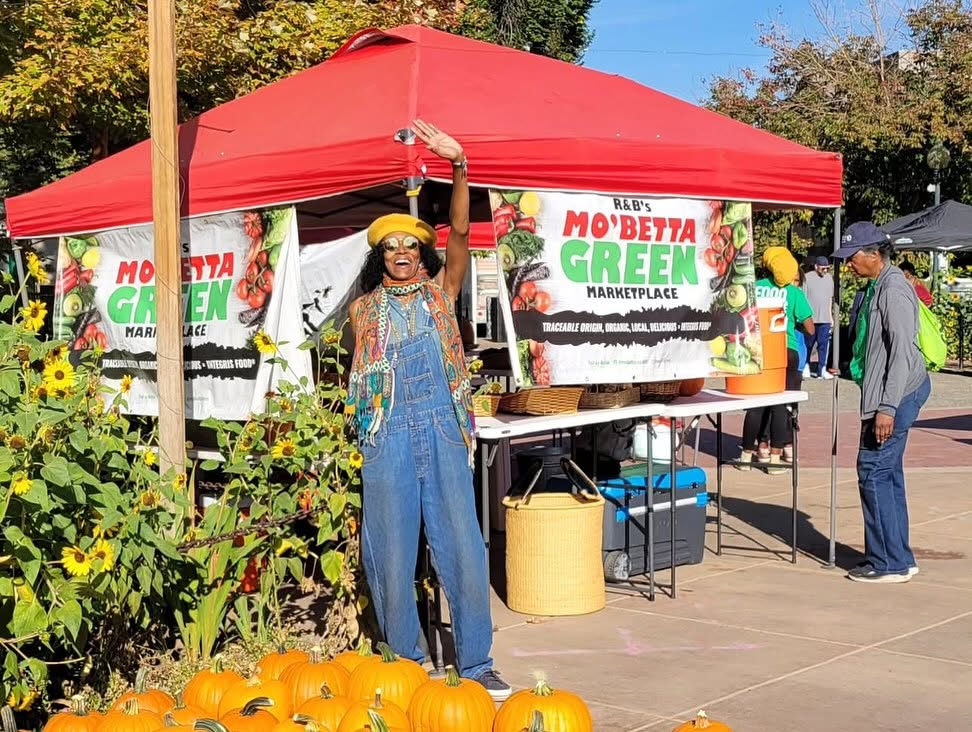

Denver · Five Points · Since 2010
R&B's Mo'Betta Green MarketPlaceSomething good is growing.
Our new website is on the way. Until then, the market rolls on — fresh produce, free wellness classes, live music, and neighbors feeding neighbors.
Traceable Origin, Organic, Local, Delicious = Integris Food®

“Growing food and sharing it changes lives.”
Beverly Grant, FounderBorn and raised in Northeast Park Hill, Miss Beverly built Mo'Betta Green to put good food back in the neighborhoods that lost it.
-
The MarketPlace
A Black-owned farmers market bringing fresh, affordable food to Denver's east side. SNAP and Double Up welcome at the table.
-
Wellness for All
Free cooking demos, nutrition education, and movement — yoga, Qi Gong, Zumba, and dance — open to every body.
-
Seeds of Power Unity Farm
Urban growing sites across Cole, Uptown, and Northeast Park Hill — where the produce and the next generation of farmers come up.
Follow us on Facebook
That's where the latest lives — market dates and locations, wellness class schedules, special events, and word the moment the new site goes up.
@mobettagreenMKTAlso on Instagram — @mobettagreen
Find the market
2401 Welton St
Five Points, Denver, CO
Market days & seasonal locations announced on our social channels.